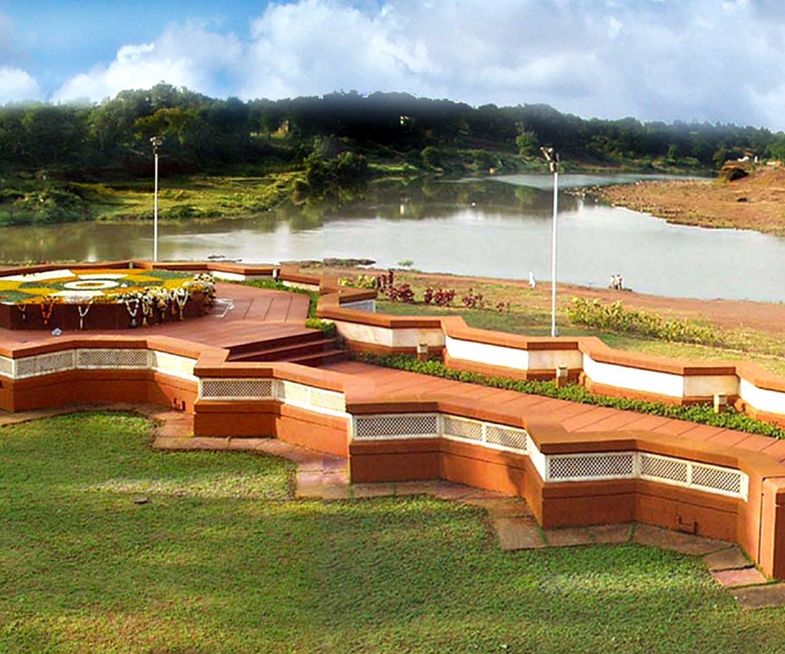
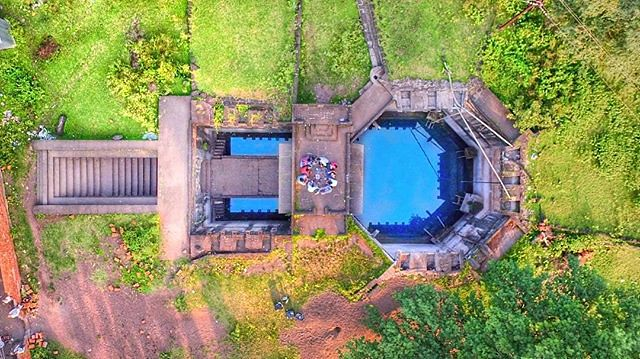
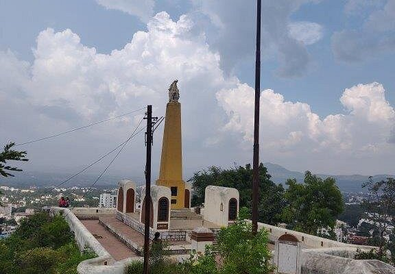
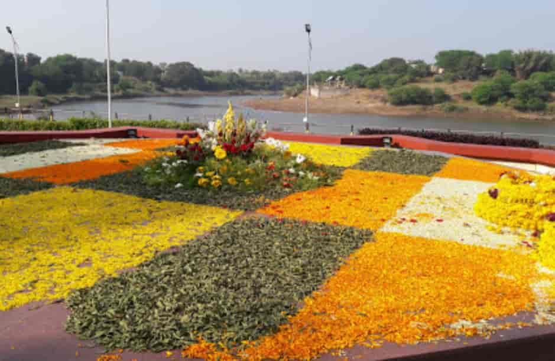
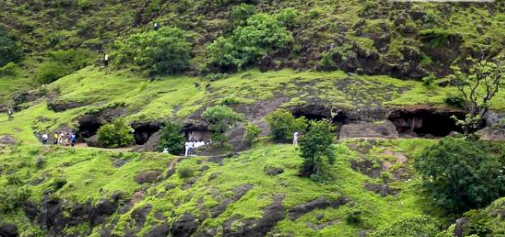

This historical memorial is dedicated to Hambirao mohite,father of Rajmata Saibai. The
samadhi reflects the personal history of the Maratha royal family and is an important heritage site.
Best time to visit:
October to February:pleasant climate
Early morning or evening for a calm visit.

This is the confluence of Krishna and Koyana rivers,historically important for trade,settlements
and administration.The area is also linked with social reformer Yashwantrao Chavan.The place is
known for its natural Beauty,calm atmosohere,and historical importance,making it a popular
destination for both spiritual visitors and nature lovers.
Location:Situated in Karad city,satara district.

Bara Motanchi Vihir is a historical stepwell built during the maratha period to supply water
to the city. The structure reflects excellent ancient water-management and engineering skills.
Todays,it stands as a reminder of satara's traditional planning and sustainable water system.
Best time to visit:October to february

char bhinti is a historically important area in satara city.it marks the old boundary of the
city during the Maratha period.This area once served as a protective and administrative limit of old satara.
char bhinti gives visitors a glimpse of how cities were organized and protected in earlier times.
today,the place holds strong heritage and cultural values.
ideal for heritage walks
Best time to visit:daytime
Combine with old satara city tour

This is the memorial of Yashwantrao Chavan,Maharashtra first Chief Minister and national leader.
it represents modern political history and leadership.The samadhi is set in a calm and well-maintained
area surrounded by greenery,reflecting the simplicity,discipline,and vision of the leader.The peaceful
environment makes it an ideal place for reflection and learning.
Location: Near Preeti Sangam in Karad,satara district
Best time to visit:October to february
Early morning or evening
special visit on Yashwantrao Chavan Jayanti

Agashiv caves are ancient rock-cut caves located in satara district,Maharashtra.
These caves are believed to date back to the Buddhist peroid(around 2nd century BCE to 5th
century CE).They are an important archaeological and historical site,reflecting early
Buddhist architecture and monastic life.The caves are carved into a rocky hill and are surrounded
by natural greenery,making the place peaceful and suitable for history lovers.
Why visit:Experience ancient Buddhist heritage
Quit and peaceful environment
Scenic view of surrounding hills and countryside
ideal for history study,photography,and calm exploration
